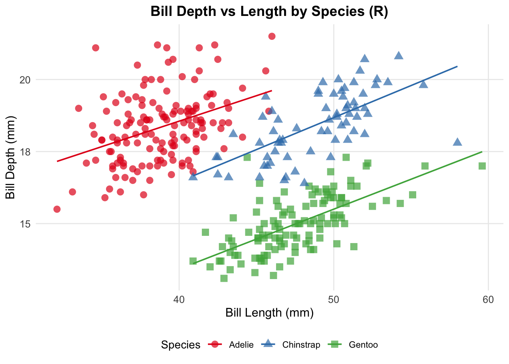
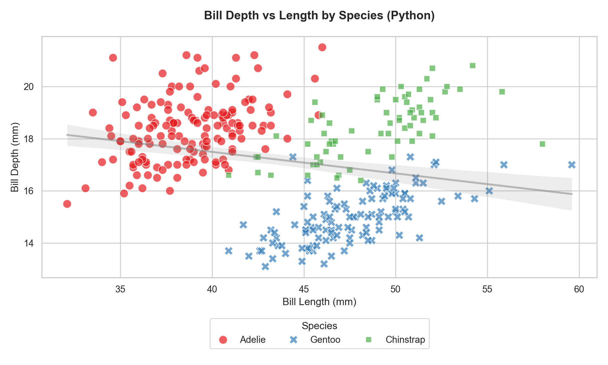

Code
# R code
print("Hello from R!")[1] "Hello from R!"A Complete Guide to R, Python, Julia, and Observable JS Integration
[Your Name]
May 13, 2025
Creating multi-language documents in Quarto can be powerful but requires careful setup. This guide walks through setting up a macOS environment to run Quarto documents that combine R, Python, Julia, and Observable JS. We’ll use the Palmer Penguins dataset as an example, creating visualizations in each language.
Install required R packages:
No separate installation needed, but your Quarto document must include:
Run these commands to verify each language integration:
Here’s a minimal example combining all languages:
All languages need to access the same files. Check working directories:
Ensure your working directory has write permissions:
Monitor memory usage:
Here’s a complete example creating the same visualization in all four languages. See the companion repository at [GitHub Link] for the full code.
Setting up a multi-language Quarto environment requires attention to detail but offers powerful capabilities for data analysis and visualization. Keep your system updated, use version control, and document your setup for reproducibility.
R version 4.5.0 (2025-04-11)
Platform: aarch64-apple-darwin20
Running under: macOS Sequoia 15.4.1
Matrix products: default
BLAS: /Library/Frameworks/R.framework/Versions/4.5-arm64/Resources/lib/libRblas.0.dylib
LAPACK: /Library/Frameworks/R.framework/Versions/4.5-arm64/Resources/lib/libRlapack.dylib; LAPACK version 3.12.1
locale:
[1] en_US.UTF-8/en_US.UTF-8/en_US.UTF-8/C/en_US.UTF-8/en_US.UTF-8
time zone: America/Los_Angeles
tzcode source: internal
attached base packages:
[1] stats graphics grDevices datasets utils methods base
other attached packages:
[1] shiny_1.10.0 styler_1.10.3 quarto_1.4.4 pacman_0.5.1 readxl_1.4.5 knitr_1.50 lubridate_1.9.4 forcats_1.0.0 stringr_1.5.1 dplyr_1.1.4
[11] purrr_1.0.4 readr_2.1.5 tidyr_1.3.1 tibble_3.2.1 ggplot2_3.5.2 tidyverse_2.0.0 tidytuesdayR_1.1.2 rmarkdown_2.29 kableExtra_1.4.0 janitor_2.2.1
[21] datapasta_3.1.0 ggthemes_5.1.0 conflicted_1.2.0 DT_0.33 naniar_1.1.0 devtools_2.4.5 usethis_3.1.0
loaded via a namespace (and not attached):
[1] tidyselect_1.2.1 viridisLite_0.4.2 R.utils_2.13.0 fastmap_1.2.0 promises_1.3.2 digest_0.6.37 timechange_0.3.0 mime_0.13 lifecycle_1.0.4 ellipsis_0.3.2
[11] processx_3.8.6 magrittr_2.0.3 compiler_4.5.0 rlang_1.1.6 tools_4.5.0 yaml_2.3.10 htmlwidgets_1.6.4 pkgbuild_1.4.7 here_1.0.1 reticulate_1.42.0
[21] xml2_1.3.8 pkgload_1.4.0 miniUI_0.1.1.1 R.cache_0.16.0 withr_3.0.2 R.oo_1.27.0 grid_4.5.0 urlchecker_1.0.1 profvis_0.4.0 xtable_1.8-4
[31] colorspace_2.1-1 scales_1.3.0 cli_3.6.4 generics_0.1.3 remotes_2.5.0 rstudioapi_0.17.1 tzdb_0.5.0 sessioninfo_1.2.3 cachem_1.1.0 cellranger_1.1.0
[41] vctrs_0.6.5 Matrix_1.7-3 jsonlite_2.0.0 hms_1.1.3 visdat_0.6.0 systemfonts_1.2.2 glue_1.8.0 ps_1.9.0 stringi_1.8.7 gtable_0.3.6
[51] later_1.4.2 munsell_0.5.1 pillar_1.10.2 htmltools_0.5.8.1 R6_2.6.1 rprojroot_2.0.4 lattice_0.22-6 evaluate_1.0.3 png_0.1-8 R.methodsS3_1.8.2
[61] memoise_2.0.1 snakecase_0.11.1 httpuv_1.6.15 Rcpp_1.0.14 svglite_2.1.3 xfun_0.52 fs_1.6.6 pkgconfig_2.0.3 Here’s a complete, documented version of the multi-language visualization example. Each section includes detailed explanations of the code and important considerations.
---
title: "Palmer Penguins: Multi-Language Visualization Comparison"
author: "[Your Name]"
date: "`r Sys.Date()`"
format:
html:
# Enable code folding for cleaner output
code-fold: true
# Bundle all resources into single HTML
embed-resources: true
theme: default
execute:
echo: true
# Required for Observable Plot
dependencies:
- name: "@observablehq/plot"
version: latest
---
## Introduction
This document demonstrates how to create the same visualization - a scatterplot of
bill depth versus bill length by species - using four different programming
languages: R, Python, Julia, and Observable JS. Each implementation showcases
the unique strengths of its ecosystem.
## Data Preparation in R
# First, we load required libraries and prepare our data[conflicted] Will prefer palmerpenguins::penguins over any other package.# Prepare and save data for other languages
# We remove NA values to ensure consistency across languages
data <- penguins %>% na.omit()
# Save to CSV for other languages to read
# Note: row.names=FALSE prevents adding an index column
write.csv(data, "penguins.csv", row.names = FALSE)
# Display data structure for verification
glimpse(data)Rows: 333
Columns: 8
$ species <fct> Adelie, Adelie, Adelie, Adelie, Adelie, Ad…
$ island <fct> Torgersen, Torgersen, Torgersen, Torgersen…
$ bill_length_mm <dbl> 39, 40, 40, 37, 39, 39, 39, 41, 39, 35, 37…
$ bill_depth_mm <dbl> 19, 17, 18, 19, 21, 18, 20, 18, 21, 21, 18…
$ flipper_length_mm <int> 181, 186, 195, 193, 190, 181, 195, 182, 19…
$ body_mass_g <int> 3750, 3800, 3250, 3450, 3650, 3625, 4675, …
$ sex <fct> male, female, female, female, male, female…
$ year <int> 2007, 2007, 2007, 2007, 2007, 2007, 2007, …ggplot(data, aes(x = bill_length_mm,
y = bill_depth_mm,
color = species,
shape = species)) +
# Add points with some transparency
geom_point(size = 3, alpha = 0.7) +
# Add trend lines without confidence intervals
geom_smooth(method = "lm", se = FALSE, linewidth = 0.7, alpha = 0.5) +
# Use colorblind-friendly palette
scale_color_brewer(palette = "Set1") +
# Add clear labels
labs(title = "Bill Depth vs Length by Species (R)",
x = "Bill Length (mm)",
y = "Bill Depth (mm)",
color = "Species",
shape = "Species") +
# Use minimal theme for clean look
theme_minimal() +
# Customize theme elements
theme(
plot.title = element_text(hjust = 0.5, size = 14, face = "bold"),
legend.position = "bottom",
panel.grid.minor = element_blank(),
axis.text = element_text(size = 10),
axis.title = element_text(size = 12)
)`geom_smooth()` using formula = 'y ~ x'
import pandas as pd
import seaborn as sns
import matplotlib.pyplot as plt
# Set style - use whitegrid for consistency with R plot
sns.set_theme(style="whitegrid")
sns.set_palette("Set1") # Match R's color scheme
# Read the CSV file created by R
penguins = pd.read_csv("penguins.csv").dropna()
# Create figure with specific size
plt.figure(figsize=(10, 6))
# Create scatterplot with regression lines
sns.scatterplot(data=penguins,
x='bill_length_mm',
y='bill_depth_mm',
hue='species',
style='species',
s=100, # Point size
alpha=0.7) # Match R's transparency
# Add overall trend line
sns.regplot(data=penguins,
x='bill_length_mm',
y='bill_depth_mm',
scatter=False,
color='gray',
line_kws={'alpha': 0.5})
# Customize plot
plt.title('Bill Depth vs Length by Species (Python)',
pad=20,
size=14,
weight='bold')
plt.xlabel('Bill Length (mm)', size=12)
plt.ylabel('Bill Depth (mm)', size=12)
# Adjust legend position to match R plot
plt.legend(title='Species', bbox_to_anchor=(0.5, -0.15),
loc='upper center', ncol=3)
# Adjust layout to prevent cutoff
plt.tight_layout()
plt.show()
using UnicodePlots # For reliable plotting in any environment
using DataFrames # For data manipulation
using CSV # For reading CSV
using Statistics # For basic stats
# Read data
penguins = CSV.read("penguins.csv", DataFrame)
dropmissing!(penguins) # Remove any NA values
# Create scatter plot
# Note: Using UnicodePlots for reliability across environments
plt = scatterplot(
penguins.bill_length_mm,
penguins.bill_depth_mm,
name = string.(penguins.species), # Convert species to strings
title = "Bill Depth vs Length by Species (Julia)",
xlabel = "Bill Length (mm)",
ylabel = "Bill Depth (mm)",
canvas = DotCanvas # Use dots for points
)
# Show plot
pltimport { Plot } from "@observablehq/plot"
// Load and prepare data
penguins = FileAttachment("penguins.csv").csv()
// Create plot with Observable Plot
Plot.plot({
// Use consistent color scheme
color: {scheme: "category10"},
// Add scatter plot points
marks: [
Plot.dot(penguins, {
x: "bill_length_mm",
y: "bill_depth_mm",
stroke: "species",
fill: "species"
})
],
// Add axis labels
x: {label: "Bill Length (mm)"},
y: {label: "Bill Depth (mm)"},
// Add title
title: "Bill Depth vs Length by Species (Observable JS)"
})Each language offers unique advantages for visualization:
The core visualization remains consistent across all implementations, showing the relationship between bill depth and length across different penguin species, while each implementation showcases the strengths of its respective ecosystem.
### Key Implementation Notes
1. **YAML Header**
- Includes necessary dependencies for Observable Plot
- Sets up HTML output with code folding
- Ensures resources are embedded for portability
2. **Data Preparation**
- Uses R for initial data loading and cleaning
- Exports clean CSV for other languages
- Maintains consistent data across all visualizations
3. **Language-Specific Considerations**
- R: Uses ggplot2 for publication-quality static plots
- Python: Matches R's aesthetic choices for consistency
- Julia: Uses UnicodePlots for reliability
- Observable JS: Provides interactive web-native visualization
4. **Common Patterns**
- Consistent color schemes
- Similar axis labels and titles
- Comparable point sizes and transparencies
- Aligned legend positions where possible
5. **Error Prevention**
- Explicit NA handling
- Consistent working directory usage
- Clear data export/import chain
- Reliable plotting backends
This implementation provides a robust template for multi-language visualization
that can be adapted for other datasets and analysis needs.
## Prerequisites
In development
## Step-by-Step Implementation
In development
## Key Takeaways
In development
## Further Reading
In development
:::{#quarto-navigation-envelope .hidden}
[Thomas Lab]{.hidden .quarto-markdown-envelope-contents render-id="cXVhcnRvLWludC1zaWRlYmFyLXRpdGxl"}
[Thomas Lab]{.hidden .quarto-markdown-envelope-contents render-id="cXVhcnRvLWludC1uYXZiYXItdGl0bGU="}
[Categories]{.hidden .quarto-markdown-envelope-contents render-id="cXVhcnRvLWludC1zaWRlYmFyOnF1YXJ0by1zaWRlYmFyLXNlY3Rpb24tMQ=="}
[Programming & Development]{.hidden .quarto-markdown-envelope-contents render-id="cXVhcnRvLWludC1zaWRlYmFyOnF1YXJ0by1zaWRlYmFyLXNlY3Rpb24tMg=="}
[Data Analysis & Visualization]{.hidden .quarto-markdown-envelope-contents render-id="cXVhcnRvLWludC1zaWRlYmFyOnF1YXJ0by1zaWRlYmFyLXNlY3Rpb24tMw=="}
[Deployment & Operations]{.hidden .quarto-markdown-envelope-contents render-id="cXVhcnRvLWludC1zaWRlYmFyOnF1YXJ0by1zaWRlYmFyLXNlY3Rpb24tNA=="}
[Development Environment]{.hidden .quarto-markdown-envelope-contents render-id="cXVhcnRvLWludC1zaWRlYmFyOnF1YXJ0by1zaWRlYmFyLXNlY3Rpb24tNQ=="}
[Shiny Applications]{.hidden .quarto-markdown-envelope-contents render-id="cXVhcnRvLWludC1zaWRlYmFyOnF1YXJ0by1zaWRlYmFyLXNlY3Rpb24tNg=="}
[AI & Automation]{.hidden .quarto-markdown-envelope-contents render-id="cXVhcnRvLWludC1zaWRlYmFyOnF1YXJ0by1zaWRlYmFyLXNlY3Rpb24tNw=="}
[System Administration]{.hidden .quarto-markdown-envelope-contents render-id="cXVhcnRvLWludC1zaWRlYmFyOnF1YXJ0by1zaWRlYmFyLXNlY3Rpb24tOA=="}
[Home]{.hidden .quarto-markdown-envelope-contents render-id="cXVhcnRvLWludC1uYXZiYXI6SG9tZQ=="}
[/index.html]{.hidden .quarto-markdown-envelope-contents render-id="cXVhcnRvLWludC1uYXZiYXI6L2luZGV4Lmh0bWw="}
[Blog]{.hidden .quarto-markdown-envelope-contents render-id="cXVhcnRvLWludC1uYXZiYXI6QmxvZw=="}
[/posts/index.html]{.hidden .quarto-markdown-envelope-contents render-id="cXVhcnRvLWludC1uYXZiYXI6L3Bvc3RzL2luZGV4Lmh0bWw="}
[About]{.hidden .quarto-markdown-envelope-contents render-id="cXVhcnRvLWludC1uYXZiYXI6QWJvdXQ="}
[/about/index.html]{.hidden .quarto-markdown-envelope-contents render-id="cXVhcnRvLWludC1uYXZiYXI6L2Fib3V0L2luZGV4Lmh0bWw="}
[https://twitter.com/rgt47]{.hidden .quarto-markdown-envelope-contents render-id="cXVhcnRvLWludC1uYXZiYXI6aHR0cHM6Ly90d2l0dGVyLmNvbS9yZ3Q0Nw=="}
[https://github.com/rgt47]{.hidden .quarto-markdown-envelope-contents render-id="cXVhcnRvLWludC1uYXZiYXI6aHR0cHM6Ly9naXRodWIuY29tL3JndDQ3"}
:::{.hidden .quarto-markdown-envelope-contents render-id="Zm9vdGVyLWxlZnQ="}
Copyright 2023-2025, Ronald G. Thomas
:::
:::
:::{#quarto-meta-markdown .hidden}
[Setting Up Multi-Language Quarto Documents on macOS – Thomas Lab]{.hidden .quarto-markdown-envelope-contents render-id="cXVhcnRvLW1ldGF0aXRsZQ=="}
[Setting Up Multi-Language Quarto Documents on macOS – Thomas Lab]{.hidden .quarto-markdown-envelope-contents render-id="cXVhcnRvLXR3aXR0ZXJjYXJkdGl0bGU="}
[Setting Up Multi-Language Quarto Documents on macOS – Thomas Lab]{.hidden .quarto-markdown-envelope-contents render-id="cXVhcnRvLW9nY2FyZHRpdGxl"}
[Thomas Lab]{.hidden .quarto-markdown-envelope-contents render-id="cXVhcnRvLW1ldGFzaXRlbmFtZQ=="}
[A Complete Guide to R, Python, Julia, and Observable JS Integration]{.hidden .quarto-markdown-envelope-contents render-id="cXVhcnRvLXR3aXR0ZXJjYXJkZGVzYw=="}
[A Complete Guide to R, Python, Julia, and Observable JS Integration]{.hidden .quarto-markdown-envelope-contents render-id="cXVhcnRvLW9nY2FyZGRkZXNj"}
:::
<!-- -->
::: {.quarto-embedded-source-code}
```````````````````{.markdown shortcodes="false"}
---
title: "Setting Up Multi-Language Quarto Documents on macOS"
subtitle: "A Complete Guide to R, Python, Julia, and Observable JS Integration"
author: "[Your Name]"
date: "`r Sys.Date()`"
format:
html:
toc: true
toc-depth: 3
code-fold: true
execute:
echo: true
---
## Introduction
Creating multi-language documents in Quarto can be powerful but requires careful setup. This guide walks through setting up a macOS environment to run Quarto documents that combine R, Python, Julia, and Observable JS. We'll use the Palmer Penguins dataset as an example, creating visualizations in each language.
## System Requirements
- macOS (tested on Monterey and later)
- At least 8GB RAM
- ~5GB free disk space for all installations
- Admin privileges for installations
- Internet connection for package downloads
## Basic Setup
### 1. R and RStudio
1. Install R from [CRAN](https://cran.r-project.org/)
2. Install [RStudio](https://posit.co/download/rstudio-desktop/)
3. Install [Quarto](https://quarto.org/docs/get-started/)
Install required R packages:
```r
install.packages(c(
"palmerpenguins", # for example data
"dplyr", # for data manipulation
"ggplot2", # for R plotting
"scales", # for plot formatting
"reticulate", # for Python integration
"JuliaCall" # for Julia integration
))No separate installation needed, but your Quarto document must include:
Run these commands to verify each language integration:
Here’s a minimal example combining all languages:
quarto-executable-code-5450563D
quarto-executable-code-5450563D
quarto-executable-code-5450563D
// Observable JS code
md`Hello from Observable JS!`All languages need to access the same files. Check working directories:
Ensure your working directory has write permissions:
Monitor memory usage:
Here’s a complete example creating the same visualization in all four languages. See the companion repository at [GitHub Link] for the full code.
Setting up a multi-language Quarto environment requires attention to detail but offers powerful capabilities for data analysis and visualization. Keep your system updated, use version control, and document your setup for reproducibility.
quarto-executable-code-5450563D
Here’s a complete, documented version of the multi-language visualization example. Each section includes detailed explanations of the code and important considerations.
quarto-executable-code-5450563D
---
title: "Palmer Penguins: Multi-Language Visualization Comparison"
author: "[Your Name]"
date: "`r Sys.Date()`"
format:
html:
# Enable code folding for cleaner output
code-fold: true
# Bundle all resources into single HTML
embed-resources: true
theme: default
execute:
echo: true
# Required for Observable Plot
dependencies:
- name: "@observablehq/plot"
version: latest
---
## Introduction
This document demonstrates how to create the same visualization - a scatterplot of
bill depth versus bill length by species - using four different programming
languages: R, Python, Julia, and Observable JS. Each implementation showcases
the unique strengths of its ecosystem.
## Data Preparation in R
# First, we load required libraries and prepare our data
```{r setup}
# Load required libraries
library(palmerpenguins) # Contains our dataset
library(dplyr) # For data manipulation
library(ggplot2) # For visualization
library(scales) # For plot scaling
conflicts_prefer(palmerpenguins::penguins)
# Prepare and save data for other languages
# We remove NA values to ensure consistency across languages
data <- penguins %>% na.omit()
# Save to CSV for other languages to read
# Note: row.names=FALSE prevents adding an index column
write.csv(data, "penguins.csv", row.names = FALSE)
# Display data structure for verification
glimpse(data)ggplot(data, aes(x = bill_length_mm,
y = bill_depth_mm,
color = species,
shape = species)) +
# Add points with some transparency
geom_point(size = 3, alpha = 0.7) +
# Add trend lines without confidence intervals
geom_smooth(method = "lm", se = FALSE, linewidth = 0.7, alpha = 0.5) +
# Use colorblind-friendly palette
scale_color_brewer(palette = "Set1") +
# Add clear labels
labs(title = "Bill Depth vs Length by Species (R)",
x = "Bill Length (mm)",
y = "Bill Depth (mm)",
color = "Species",
shape = "Species") +
# Use minimal theme for clean look
theme_minimal() +
# Customize theme elements
theme(
plot.title = element_text(hjust = 0.5, size = 14, face = "bold"),
legend.position = "bottom",
panel.grid.minor = element_blank(),
axis.text = element_text(size = 10),
axis.title = element_text(size = 12)
)import pandas as pd
import seaborn as sns
import matplotlib.pyplot as plt
# Set style - use whitegrid for consistency with R plot
sns.set_theme(style="whitegrid")
sns.set_palette("Set1") # Match R's color scheme
# Read the CSV file created by R
penguins = pd.read_csv("penguins.csv").dropna()
# Create figure with specific size
plt.figure(figsize=(10, 6))
# Create scatterplot with regression lines
sns.scatterplot(data=penguins,
x='bill_length_mm',
y='bill_depth_mm',
hue='species',
style='species',
s=100, # Point size
alpha=0.7) # Match R's transparency
# Add overall trend line
sns.regplot(data=penguins,
x='bill_length_mm',
y='bill_depth_mm',
scatter=False,
color='gray',
line_kws={'alpha': 0.5})
# Customize plot
plt.title('Bill Depth vs Length by Species (Python)',
pad=20,
size=14,
weight='bold')
plt.xlabel('Bill Length (mm)', size=12)
plt.ylabel('Bill Depth (mm)', size=12)
# Adjust legend position to match R plot
plt.legend(title='Species', bbox_to_anchor=(0.5, -0.15),
loc='upper center', ncol=3)
# Adjust layout to prevent cutoff
plt.tight_layout()
plt.show()using UnicodePlots # For reliable plotting in any environment
using DataFrames # For data manipulation
using CSV # For reading CSV
using Statistics # For basic stats
# Read data
penguins = CSV.read("penguins.csv", DataFrame)
dropmissing!(penguins) # Remove any NA values
# Create scatter plot
# Note: Using UnicodePlots for reliability across environments
plt = scatterplot(
penguins.bill_length_mm,
penguins.bill_depth_mm,
name = string.(penguins.species), # Convert species to strings
title = "Bill Depth vs Length by Species (Julia)",
xlabel = "Bill Length (mm)",
ylabel = "Bill Depth (mm)",
canvas = DotCanvas # Use dots for points
)
# Show plot
pltquarto-executable-code-5450563D
// Import Observable Plot library
import { Plot } from "@observablehq/plot"
// Load and prepare data
penguins = FileAttachment("penguins.csv").csv()
// Create plot with Observable Plot
Plot.plot({
// Use consistent color scheme
color: {scheme: "category10"},
// Add scatter plot points
marks: [
Plot.dot(penguins, {
x: "bill_length_mm",
y: "bill_depth_mm",
stroke: "species",
fill: "species"
})
],
// Add axis labels
x: {label: "Bill Length (mm)"},
y: {label: "Bill Depth (mm)"},
// Add title
title: "Bill Depth vs Length by Species (Observable JS)"
})Each language offers unique advantages for visualization:
The core visualization remains consistent across all implementations, showing the relationship between bill depth and length across different penguin species, while each implementation showcases the strengths of its respective ecosystem.
### Key Implementation Notes
1. **YAML Header**
- Includes necessary dependencies for Observable Plot
- Sets up HTML output with code folding
- Ensures resources are embedded for portability
2. **Data Preparation**
- Uses R for initial data loading and cleaning
- Exports clean CSV for other languages
- Maintains consistent data across all visualizations
3. **Language-Specific Considerations**
- R: Uses ggplot2 for publication-quality static plots
- Python: Matches R's aesthetic choices for consistency
- Julia: Uses UnicodePlots for reliability
- Observable JS: Provides interactive web-native visualization
4. **Common Patterns**
- Consistent color schemes
- Similar axis labels and titles
- Comparable point sizes and transparencies
- Aligned legend positions where possible
5. **Error Prevention**
- Explicit NA handling
- Consistent working directory usage
- Clear data export/import chain
- Reliable plotting backends
This implementation provides a robust template for multi-language visualization
that can be adapted for other datasets and analysis needs.
## Prerequisites
In development
## Step-by-Step Implementation
In development
## Key Takeaways
In development
## Further Reading
In development:::
@online{(ryy)_glenn_thomas,
author = {(Ryy) Glenn Thomas, Ronald and Name{]}, {[}Your},
title = {Setting {Up} {Multi-Language} {Quarto} {Documents} on
{macOS}},
date = {},
url = {https://focusonr.org/posts/multilanguage_quarto_demo/},
langid = {en}
}